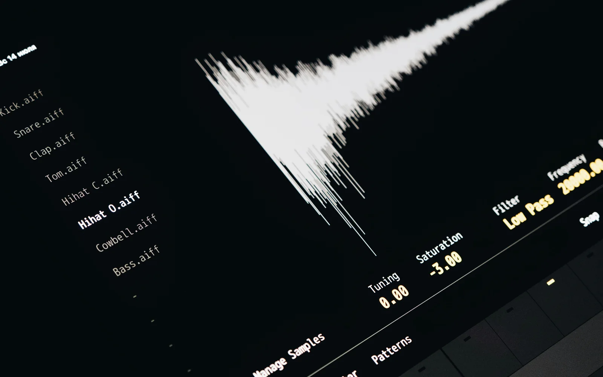

The Future of Workflows: Why AI Automation Is the Standard
Discover how businesses are replacing repetitive tasks with intelligent automation — and why early adoption gives you a competitive edge.

The Shift from Manual to Machine
A few years ago, workflows meant spreadsheets, checklists, and hours of follow-up. Now, tools like Zapier, Make, and AutoGPT automate entire processes—turning complex tasks into background logic. Whether you're managing leads, publishing content, or onboarding clients, AI does the heavy lifting.
Smarter Systems with Less Input
AI doesn’t just follow rules—it makes decisions. Want to summarize feedback from 100 forms? GPT can do that instantly. Want to send different emails to different user types? AI segmentation can handle that too. These tools don’t just save time—they make your workflows smarter and more adaptive.
Human-in-the-Loop Optional
Modern workflows run even while you sleep. A new lead can trigger a personalized AI response, update your CRM, and create a Notion page for follow-up—all without you touching anything. You can jump in when needed—but the system doesn’t need you to start running.
Integration Is the New Infrastructure
Today’s workflow doesn’t live in one app—it connects across many. Your form builder (Tally), project manager (ClickUp), content database (Notion), and email tool (ConvertKit) are all part of one connected chain. AI agents and automation tools act as the glue, moving data, triggering logic, and executing actions.
The Standard for the Next Generation
AI automation isn’t a competitive edge anymore—it’s table stakes. From solo creators to enterprise teams, automation is baked into daily operations. If you're still doing tasks manually, you're falling behind. The next wave of productivity is about designing systems—not managing tasks.